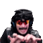

iRoboDoc is just a simple bot project for fun :)
iRoboDoc is just a simple bot project for fun :)If you'd like this bot to join your channel go to twitch.tv/DocsBathroomRoyale and type %addbot in the chat
Command List
All users are subject to 5-second cooldown unless otherwise stated. Broadcasters have no cooldown
Broadcasters have no cooldown%emoji <input>
Emoji search/lookup, see below for info (alias: %e)%greet <user>(optional) <emote>(optional)
Random greeting%slots <stake>(optional)
Simple slot machine, rolls limited by currency. Default stake is 1 (alias: %slot)%spin <bet> <stake>(optional)
Simple roulette, rolls limited by currency. Default stake is 1. See below.%gibs
Chance of free currency for %spin and %slots commands. Limited to once a day for all users%cds
Shows how much bot currency you have (aliases: %bal, %balance)%cookie
Random paragraph from 'Structure and Interpretation of Computer Programs' by Harold Abelson and Gerald J. Sussman.
Limited to once a day for all users (alias: %SICP)%fbi
Random FBI Wanted listing. Results are generally unpleasant.%freedoc
Displays the amount of time elapsed since DrDisrespect's ban (alias: %fd)%kolac <1-6665>(optional)
Random @kolac line, results may be racist, sexist or otherwise morally objectionable.%help <command>
Command reference%ping
Generic status command, shows uptime and %greet use count%info
Shows bot owner (aliases: %bot, !irobodoc)%suggest <message>
Make a suggestion, long cooldown. If it is terribly urgent please whisper @DocsBathroomRoyale on twitch directly.
 Emoji Command
Emoji Command
Command alias: %e%emoji <keywords>
Fetches emojis related to supplied keywords, results may vary from accurate to nonsense.%emoji <emoji>
Provides description of supplied emoji.%emoji -r <emoji>
Fetches emojis related to supplied emoji.
 Roulette Command
Roulette Command
%spin <bet> <stake>(optional)
Default stake is 1. Valid bets:- any number 0-36
- "even" = any Even pocket
- "odd = any Odd pocket
- "red" = any Red pocket
- "black" = any Black pocket
- "low" = any pocket 1-18
- "high" = any pocket 19-36
- "c1" = any pocket Column 1
- "c2" = any pocket Column 2
- "c3" = any pocket Column 3
- "1st" = any pocket in 1st Dozen
- "2nd" = any pocket in 2nd Dozen
- "3rd" = any pocket in 3rd Dozen

Spam Commands
These commands only available in channels where iRobodoc is or
or  (30s cooldown)
(30s cooldown)%py <emote> <1-7> <-hollow>(optional)
Emote pyramid.%di <emote> <1-9> <-hollow>(optional)
Emote diamond.❤ <emote>
Emote heart shape🌈 <message>
Multicoloured /me spam, use two rainbows for big spam: 🌈 🌈 <message>%thirdparty
Spams all third-party emotes: FFZ, BTTV, 7TV (alias: %3rdparty)
 Broadcaster Commands
Broadcaster Commands
%toggle bot
Enables/disables iRoboDoc%toggle slots
Enables/disables the %slots command%toggle spin
Enables/disables the %spin command%toggle verbose
Determines the length of responses, primarily concerns %emoji and %fbi commands%part
Bot will leave the channel